Datapoem is a short movie about a poetic form that is fictive but could be possible from the perspective of computers.
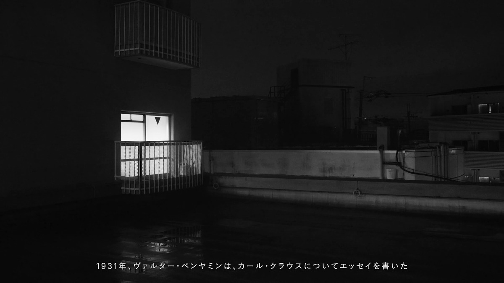 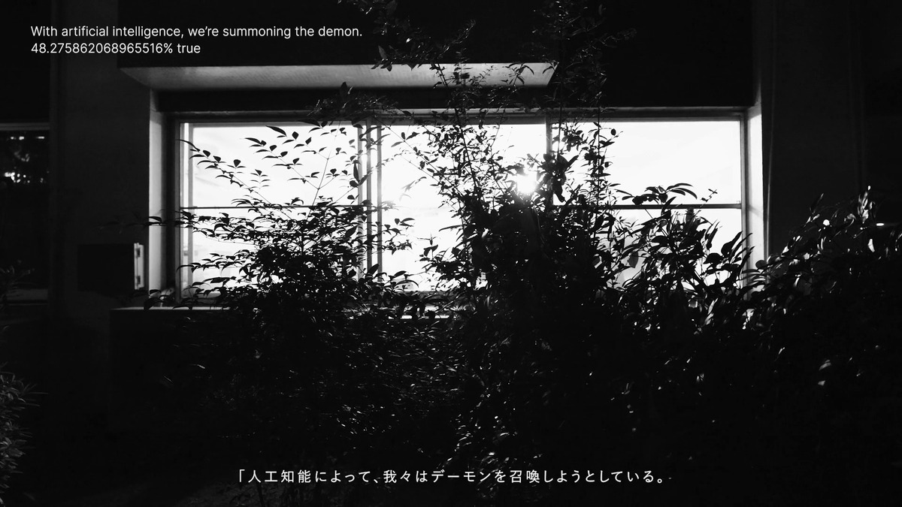 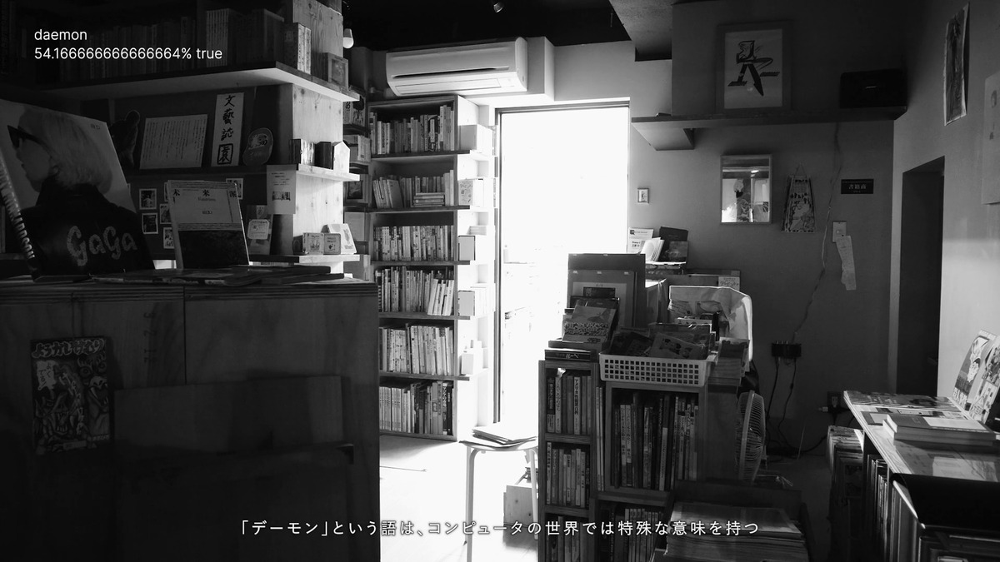 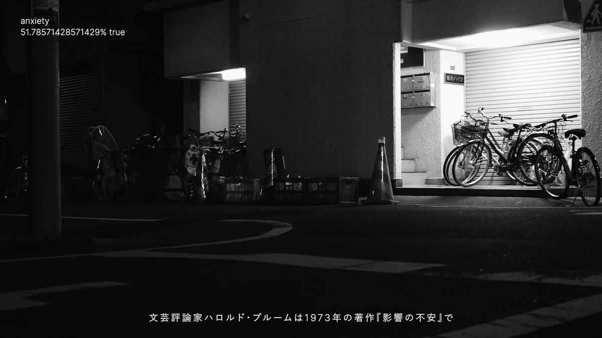 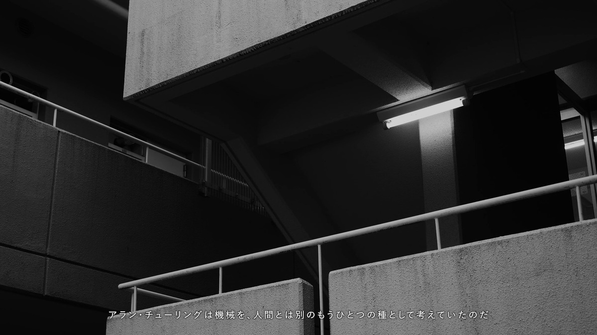 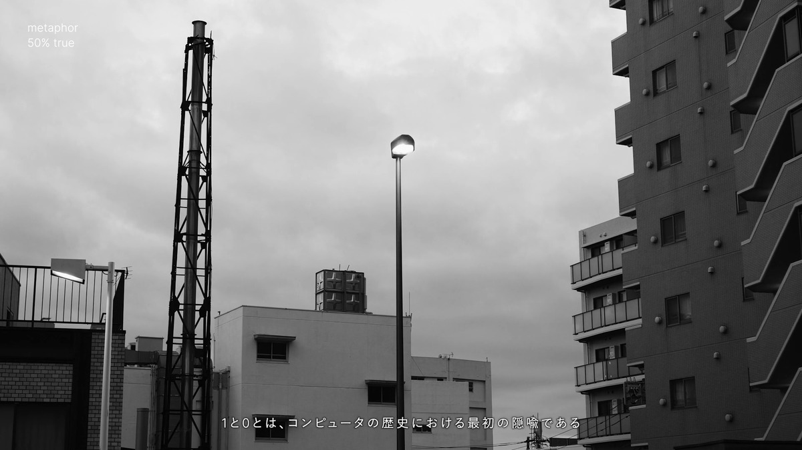
In 2017, it was shown at the "Artificial Intelligence Art and Aesthetics Exhibition" held on OIST, Okinawa. In 2022, it was remade and shown at the group exhibition “47°C (...and Cats in the Burning City)” on TALION Gallery, Mejiro.
In the newer version, in addition to the reworked video, several poems, according to the poetic form suggested as fictive in the movie, are actually produced and released as NFT. Although NFT should be able to handle any type of digital data as a non-fungible piece, the general tokens around ERC721 seem to assume image data. Not to go against this convention, photographs of the poems were also created, so this artwork includes photo prints.
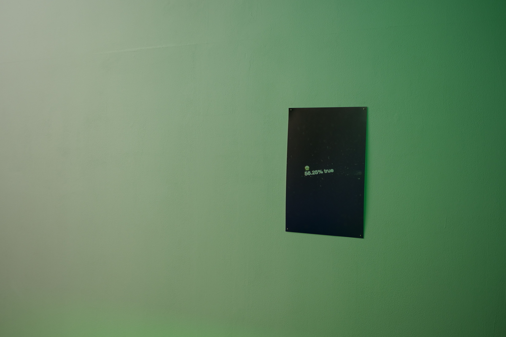 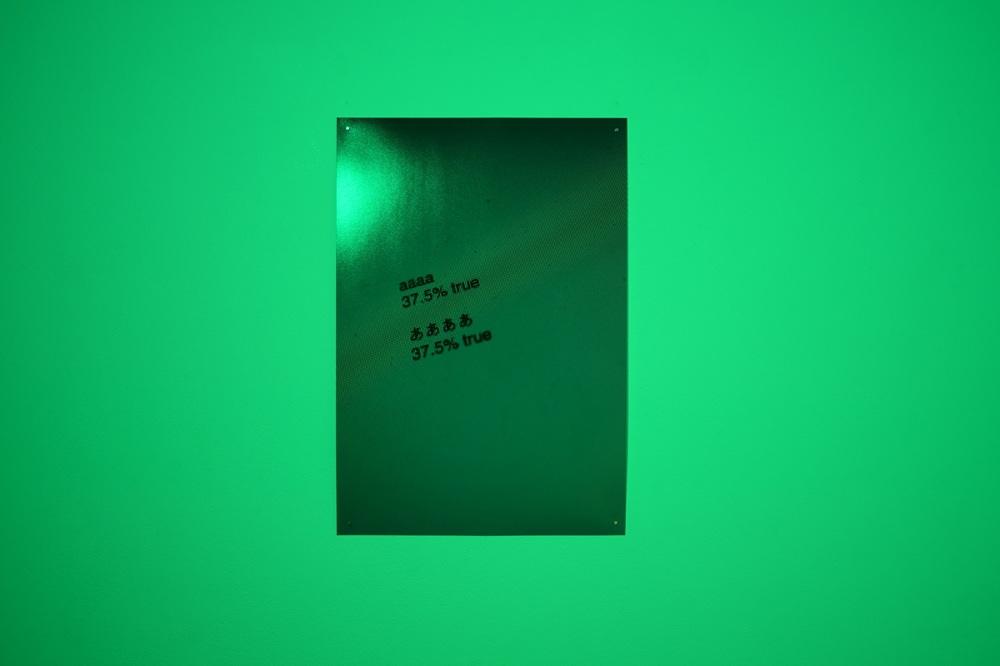 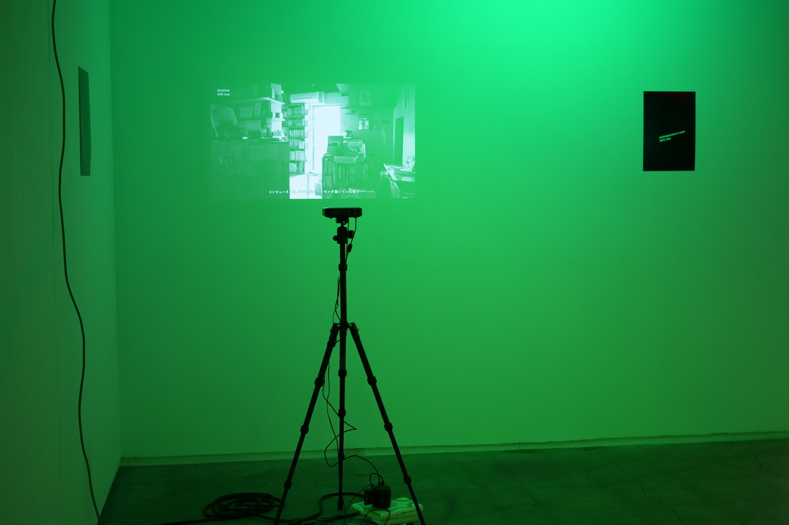 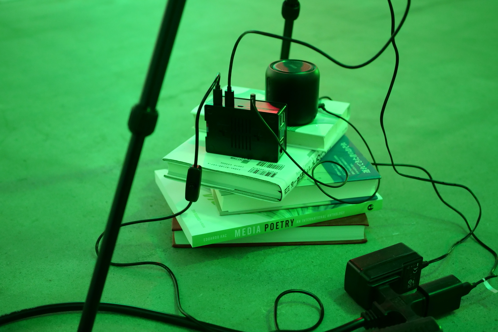 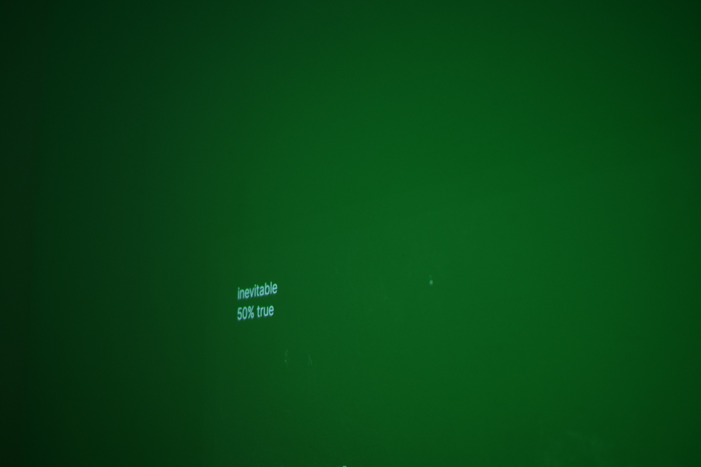